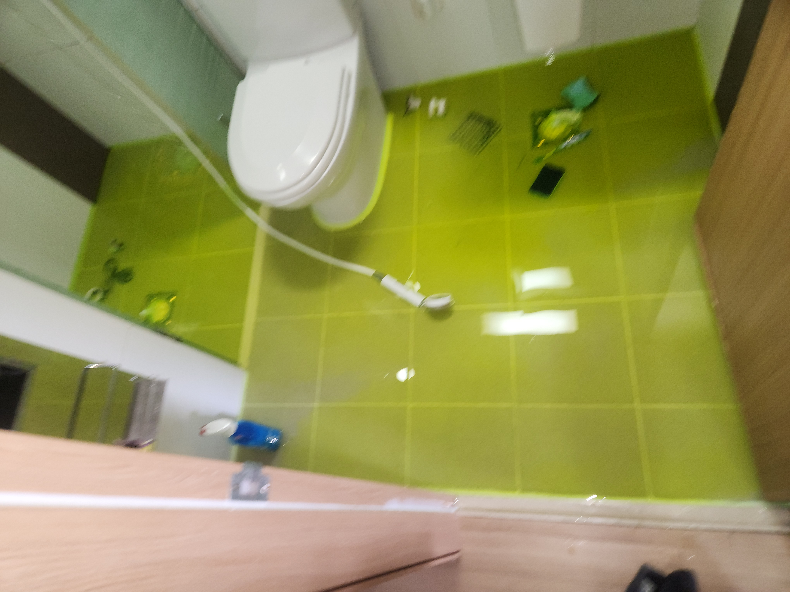
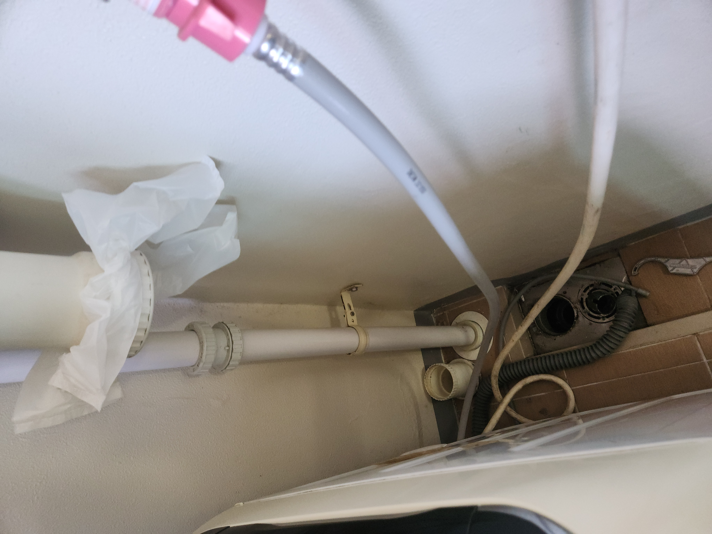
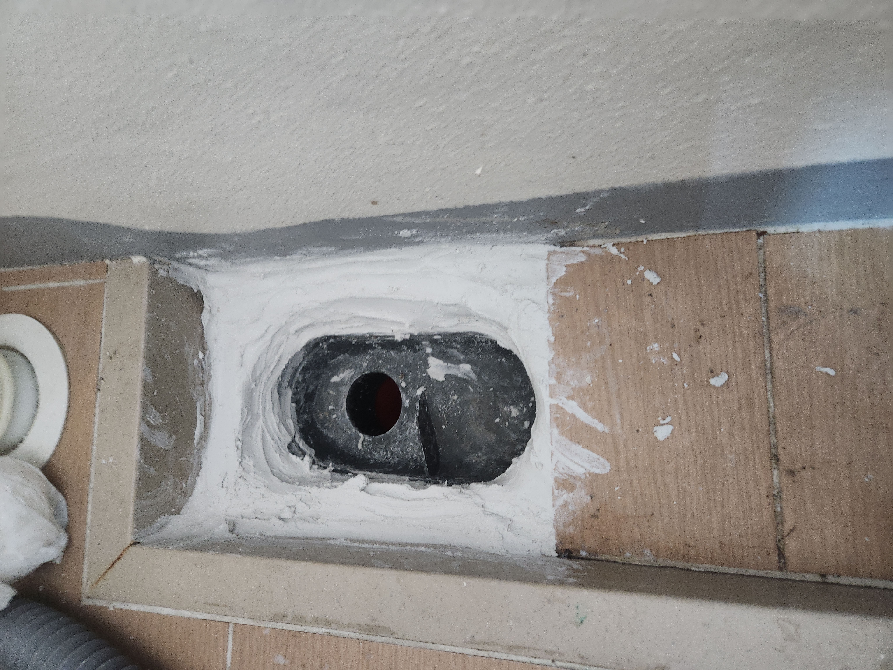

아래층에서 천장에 누수 흔적이 있다는 연락을 받고 위층 화장실을 점검한 현장입니다. 위층 세대에서는 물을 특별히 많이 쓴 기억이 없다고 하셔서, 눈에 보이지 않는 곳에서 서서히 진행된 누수일 가능성을 염두에 두고 점검을 시작했습니다.
담수테스트를 먼저 진행했습니다. 화장실 바닥 배수구를 막고 일정 수위까지 물을 채운 뒤 시간을 두고 수위 변화를 관찰하는 방법인데, 수위가 눈에 띄게 줄어들어 바닥 방수층이나 배관 이음부에서 누수가 진행되고 있음을 확인했습니다. 함께 세탁실과 연결된 아파트 우수관(빗물 배관) 쪽도 점검했는데, 구조상 화장실 누수와 우수관 문제가 겹쳐서 발생하는 경우가 종종 있어 두 가지를 함께 확인하는 것이 중요합니다.
세탁실 배관 이음부와 우수관 연결 부위를 확인해 보니 방수 마감이 오래되어 갈라진 부분이 있었습니다. 해당 구간을 정리하고 방수 작업을 새로 진행해 빗물과 생활용수가 새어 들어가지 않도록 조치했습니다. 작업 후 다시 한번 담수테스트로 수위 변화가 없는 것을 확인해 완전히 조치된 것을 재확인했습니다.
화장실누수는 원인이 배관 자체일 수도, 바닥 방수층일 수도, 우수관처럼 별도 배관 계통일 수도 있어 육안 점검만으로는 원인을 단정하기 어렵습니다. 담수테스트는 실제로 물을 채워 수위 변화를 눈으로 확인하는 방법이라 누수 여부를 가장 직관적으로 판단할 수 있고, 필요 이상으로 바닥이나 벽을 뜯지 않고도 진행할 수 있어 저희가 화장실누수 현장에서 가장 먼저 시도하는 검사법입니다. 두정동처럼 아파트 세대가 밀집한 지역에서는 아래층 피해를 최소화하기 위해서라도 이 초기 진단 단계가 특히 중요합니다.
아파트는 위아래층이 배관과 구조체로 연결되어 있는 구조라 한 세대의 누수가 이웃 세대 피해로까지 번지는 경우가 많습니다. 아래층에서 누수 관련 연락을 받으셨다면 사소하게 여기지 마시고 빠르게 담수테스트부터 받아보시길 권해드립니다.
저희는 필요한 최소 범위만 개방해 작업하고, 작업 전후로 반드시 재확인 절차를 거칩니다. 천안 두정동을 비롯한 서북구 아파트 단지에서 아래층 누수 연락을 받으셨다면 빠르게 상담 받아보시길 권해드립니다.
비슷한 증상으로 문의하실 곳을 찾고 계신다면 전화로 접수해 주세요. 접수 건은 확인 후 신속하게 연결해 안내해 드리며, 현장 진단 후 견적에 동의하신 뒤에만 작업이 진행됩니다.